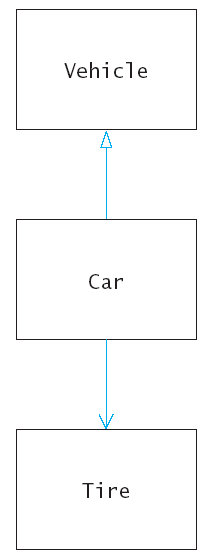
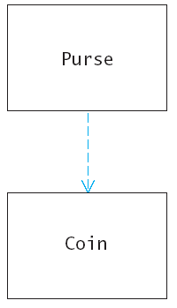
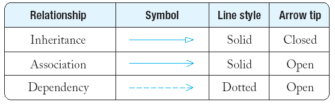
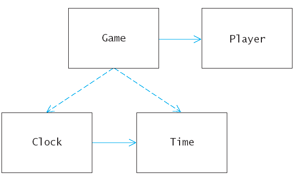

class Tire {
...
private:
string rating;
Circle boundary;
};
class Car : public Vehicle {
...
private:
vector<Tire> tires;
};

class Coin {
public:
Coin(double v, string n);
double get_value() const;
private:
...
};
class Purse {
public:
Purse();
void add(Coin c);
double get_total() const;
private:
...
};


class Bank Account {
...
private:
Person* owner;
};
class Vehicle {
...
private:
vector<Tire> tires;
};
Player Clock Time Level Game Round
draw Time
set time
Player Clock Time Level Game Round
draw Time
set time
get hours and minutes
check if equal to another Time object
increment score
get level
play
read player information
do
{ play a round
ask whether player wants to play again
}
while (player wants to play again);
play
read player information
play Player
read player information Clock
play round Time

class Clock {
public:
/**
Sets current time.
@param t the time to set
*/
void set_time(Time t);
/**
Draws the clock face, with tick marks and hands.
*/
void draw() const;
};
class Player {
public:
/**
Increments the score. Moves to next level if
current level complete.
*/
void increment_score();
/**
Gets the current level.
@return the level
*/
int get_level() const;
};
class Game {
public:
/**
Plays the game while the player wants to continue
*/
void play();
/**
Reads player name and level.
*/
void read_player_information();
/**
Plays a round, with up to two guesses.
*/
void play_round();
};
time1.seconds_from(time2) == 0